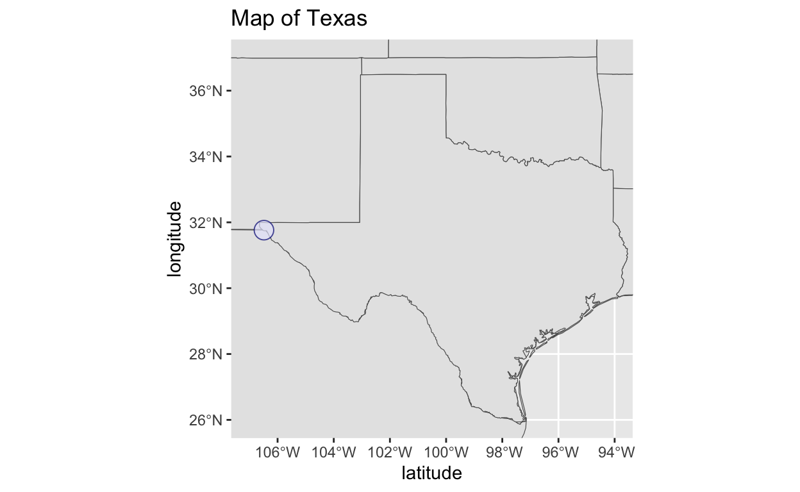
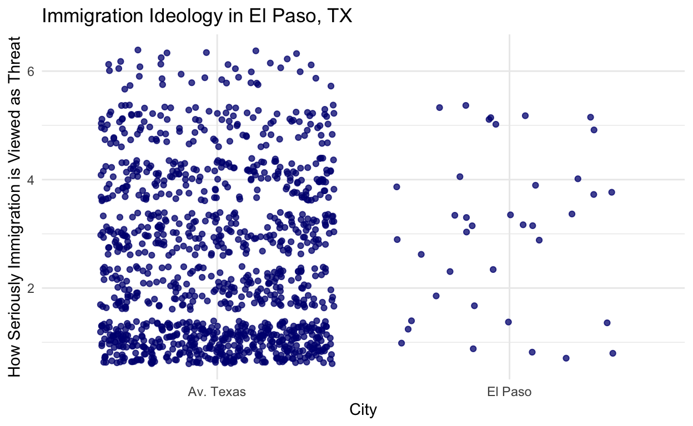
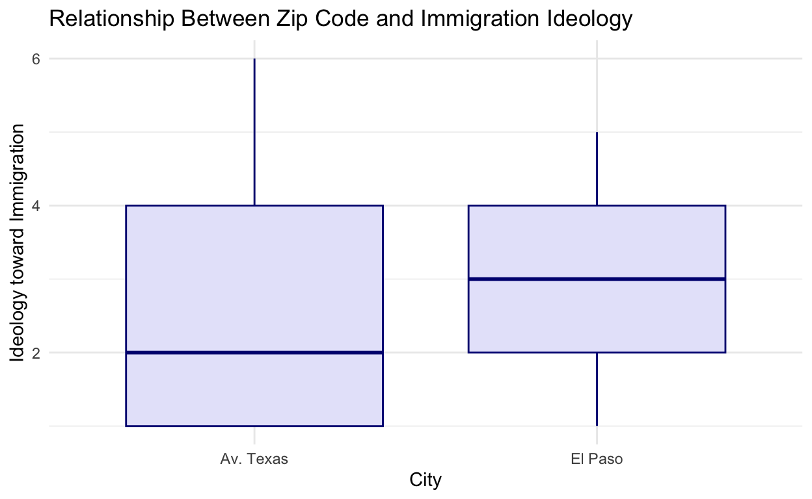

Examining the impact of border residency on immigration ideology in Texas.
In many of the past election cycles, immigration has taken a front-and-center position as one of the most salient topics of debate. Political leaders like Florida Governor Ron DeSantis and Texas Governor Greg Abbott have sought to frame the debate in geographic terms, portraying Southern states as bearing the brunt of the processes’ negative ramifications. This specific framing often portrays immigration as an issue which issue is practically concerning for voters who live close to the border, while citizens who live farther away are more likely to take a moralistic view of the situation. Thus, this logic implies that citizens who live in border cities will see the supposed negative ramifications of increased immigration in their everyday lives, and thus will be more prone to have a negative view of immigration.
However, I would like to evaluate the extent of this truth – as a Texan with family located in border cities and more interior towns, I can say from anecdotal evidence that this is not always the case. I believe that using data science to inform the conversation could help to develop a more nuanced understanding of both the issue and Texan voter’s opinions.
For my final project, will examine the relationship between immigration ideolgoy in Texas as compared to border town residence. Simply put, does living in a border city in Texas make you more likely to have a negative view of immigration? As border security has become an increasingly salient issue on the national political stage, it is all too easy for national politicians to make sweeping generalizations about the opinions of Texas voters without diving into the nuances of the multifaceted demographic. However, I believe that individuals who live close to border towns will have a more nuanced view of this issue, possibly due to the fact that they have a higher personal relationship to the immigration process. My hypothesis is that individuals who are from border cities will view immigration as less of a concerning issue than the average Texan.
##Set Up
library(tidyverse)
library(kableExtra)
library(sf)
library(ggspatial)
library(rnaturalearth)
library(maps)
library(rnaturalearthdata)citylist = c('El Paso, Texas')
city_data = tibble(location = citylist)
world_map_data <- ne_countries(scale = "medium", returnclass = "sf")
state_map_data<- map('state', fill = TRUE, plot = FALSE) %>% st_as_sf()
ggplot() +
geom_sf(data = world_map_data) +
geom_sf(data = state_map_data) +
geom_point(data = city_data, aes(x = -106.4850, y = 31.7619), color = "navy", fill = "lavender" , pch=21, size=5, alpha=I(0.7))+
coord_sf(xlim = c(-107, -94), ylim = c(26,37)) +
labs(title = "Map of Texas",
x = "latitude",
y = "longitude") 
I will primarily be examining this hypothesis through using the residents of the city of El Paso, TX (circled above) as a case study. El Paso is one of Texas largest border cities, and is directly across the border from Juárez, Chihuahua, México. In September of this year, El Paso’s mayor Oscar Leeser said that the city has reached a “breaking point”, as more than 2,000 migrants seek asylum in the city every day. Thus, this provides a salient and immediate example of a border town whose populous is intimately familiar with the implications of increased immigration from Latin America.
In order to study the hypothesis, I plan to use data from August 2023 University of Texas/Texas Politics Project Poll. My explanatory, independent variable will be an individual’s city of residence, and the dependent variable will be an individual’s view of immigration. This is quantified in the Q20_grid_A, wherein individuals rank how seriously the perceive the threat of immigration, from “extremely serious” (1) to “not serious” (5) along with options for “no opinion” or to skip.
library(haven)
library(kableExtra)
UT_data <- read_sav("utex0055d_output.sav")
UT_data_sample <- UT_data [1:5, c(1, 46, 161, 165, 166, 169)]
UT_data_sample|>
kbl()|>
kable_material(c("striped", "hover"))| caseid | Q20_grid_A | birthyr | zipcode | countyname | hispanic |
|---|---|---|---|---|---|
| 1241669060 | 4 | 1956 | 75951 | Jasper TX | 2 |
| 1241653638 | 2 | 1955 | 77377 | Harris TX | 2 |
| 1241669412 | 1 | 1987 | 77845 | Brazos TX | 1 |
| 1241667372 | 3 | 1973 | 75231 | Dallas TX | 2 |
| 1241668958 | 1 | 1957 | 75180 | Dallas TX | 2 |
In order to study and evaluate these variables, I will transform these variables into binary indicators. For the city, I will create a new variable that will sort the results into two categories – El Paso, for respondents living in El Paso County, or Av. Texas, for respondents living in all other Texas counties who will represent the control group. Further, in terms of immigration ideology, I will sort answers of 1s or 2s into one category of individuals who view immigration as pressing, and responses of 3s, 4s, or 5s will be categorized as not pressing. In order for my hypothesis to be proven, respondents living in El Paso County will disproportionately fit into the former category, as compared to the control group of the other Texas counties.
EP_Scatter <- ggplot(data = UT_data, mapping = aes(x = city, y = Q20_grid_A)) +
geom_jitter(alpha = 0.75, color = "navy")+
labs( x = "City",
y = "How Seriously Immigration is Viewed as Threat",
title = "Immigration Ideology in El Paso, TX") +
theme_minimal()
EP_Scatter
As stated above, my dependent variable for this study are the respondents’ views on immigration. As can be seen above, the dataset includes approximately 1,200 responses, divided in the ideological gradient between 1 and 5. Whereas this is largely skewed torward 1 for the overall dataset — meaning that that more Texans view immigration as pressing — the datapoints of respondents living in El Paso are more evenly distributed.
UT_data |>
ggplot(aes(x = factor(city), y = Q20_grid_A)) +
geom_boxplot(color = "navy", fill = "lavender") +
labs(x = "City",
y = "Ideology toward Immigration",
title = "Relationship Between Zip Code and Immigration Ideology")+
theme_minimal()
Here, we can see more clearly that respondents living in El Paso have a higher average score on the immigration ideology test, as compared to the broader respondents in all of Texas. Although the data shows that El Paso residents have a more tolerant view of immigration, we now must proceed to analyze the data to determine the exact relationship between this two factors.
In order to more thoroughly investigate this relationship, I will conduct a difference in means analysis of immigration ideology and El Paso residence.
imm_DIM<- UT_data |>
group_by(city) |>
summarize(avg_im_id = mean(Q20_grid_A, na.rm = TRUE)) |>
pivot_wider(names_from = city,
values_from = avg_im_id) |>
mutate(ATE = `El Paso` - `Av. Texas`)
imm_DIM |>
kbl()|>
kable_material(c("striped", "hover"))| Av. Texas | El Paso | ATE |
|---|---|---|
| 2.502157 | 3 | 0.497843 |
library(infer)
set.seed(02138)
ate_boots <- UT_data |>
specify(im_id ~ city) |>
hypothesize(null = "independence") |>
generate(reps = 1000, type = "bootstrap") |>
calculate(stat = "diff in means")
ate_ci_95 <- ate_boots |>
get_confidence_interval (level = 0.95)
ate_ci_95 |>
kbl()|>
kable_material(c("striped", "hover"))| lower_ci | upper_ci |
|---|---|
| -0.3499108 | -0.0555336 |
Since the above confidence interval does not include 0, we know that we can firmly reject the null hypothesis. Thus, we can accept that there is a possibility that border town residence has an effect on an individual’s views toward immigration. In order to more fully explore this relationship, I will create a linear regression with the city of residence, Hispanic identity, and age as the independent variables, and the immigration ideology as the dependent variable.
library(broom)
imid_city_change <- lm(im_id ~ city + birthyr + hispanic, data = UT_data)
var_labels <- c(
"cityEl Paso" = "El Paso Residency",
"birthyr" = "Age",
"hispanic" = "Hispanic Ethnicity"
)
modelsummary :: modelsummary(
imid_city_change,
coef_map = var_labels,
statistic = c ("s.e. = {std.error}",
"p = {p.value}"),
gof_map = c("nobs", "r.squared", "adj.r.squared"))| (1) | |
|---|---|
| El Paso Residency | 0.222 |
| s.e. = 0.174 | |
| p = 0.204 | |
| Age | 0.005 |
| s.e. = 0.001 | |
| p = <0.001 | |
| Hispanic Ethnicity | 0.130 |
| s.e. = 0.065 | |
| p = 0.046 | |
| Num.Obs. | 900 |
| R2 | 0.026 |
| R2 Adj. | 0.023 |
Because the p-value is 0.204, I can conclude that living in a border city such as El Paso does not have any statistically significant impact on an individual’s view of immigration. Thus, I cannot prove that my hypothesis that living in a border city causes individuals to have a more tolerant view toward immigration. While there is no missing data in the dataset that would affect this conclusion, a possible factor which could influence the result is that this process did not completely dissaggregate every response from an individual living in a border town from that of the rest of Texas. In other words, this study specifically compared the results of individuals living in El Paso with the results of every other respondent, which included a small amount of individuals living in other border cities. In future experiements, I suggest that researchers fully disaggregate this data in order to further examine this trend.
Additionally, in future studies, I would suggest that researchers more carefully investigate the relationship between an invdividual’s birth year and their opinions on immigration. This variable’s p-value is <0.001, and thus extremely statistically significant.
#Works Cited
Data Sourced from the Texas Politics Project and the University of Texas at Austin: August 2023 University of Texas/Texas Politics Project Poll https://texaspolitics.utexas.edu/polling-data-archive
Codebook: https://texaspolitics.utexas.edu/sites/texaspolitics.utexas.edu/files/utex0055d_codebook.pdf
Poll Summary: https://texaspolitics.utexas.edu/sites/texaspolitics.utexas.edu/files/202308_poll_topline.pdf
Poll Crosstabs: https://texaspolitics.utexas.edu/sites/texaspolitics.utexas.edu/files/202308_poll_crosstabs.pdf
Reuters Interview with El Paso Mayor: https://www.reuters.com/world/americas/el-paso-texas-at-breaking-point-migrants-flood-border-mayor-says-2023-09-23/